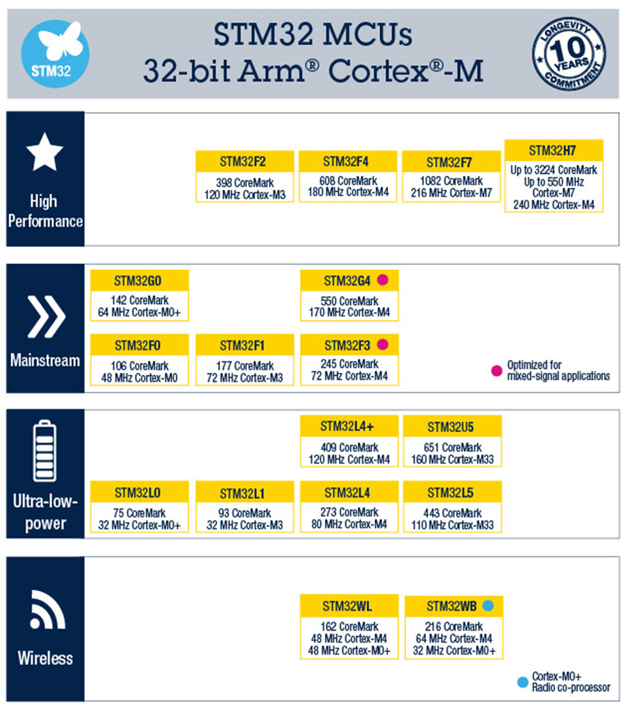
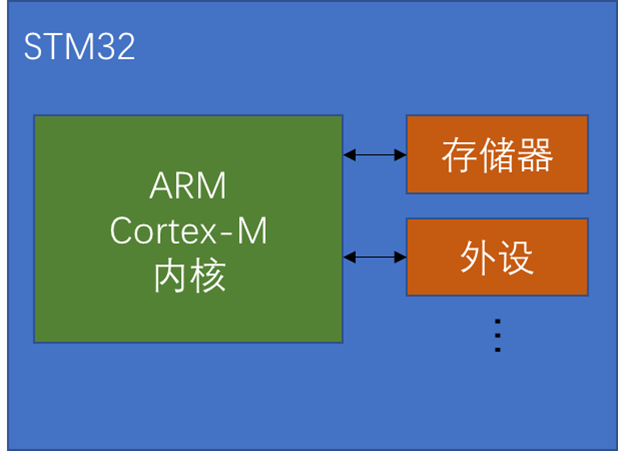
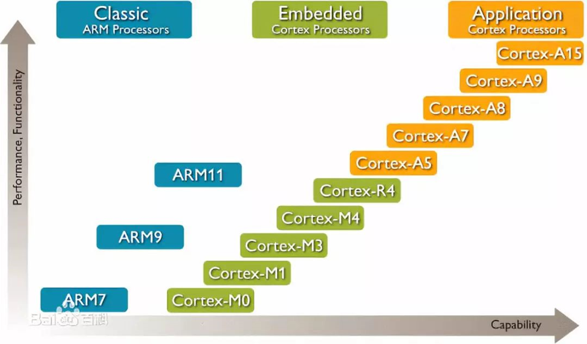
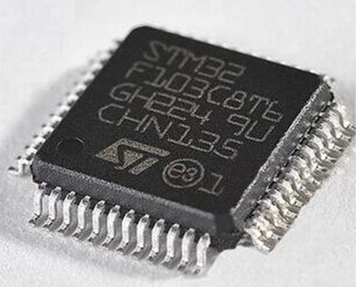
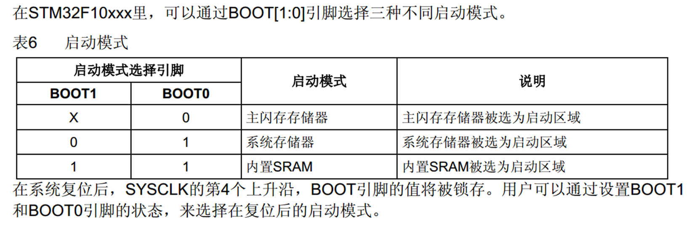
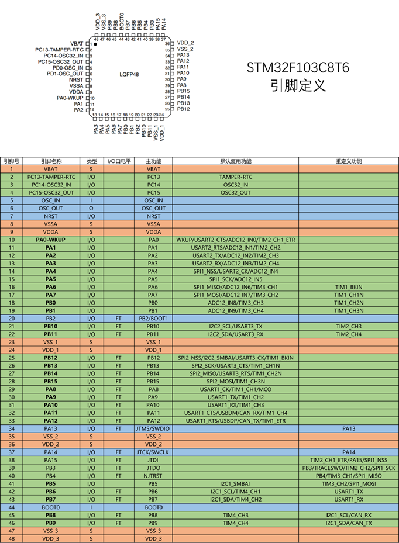
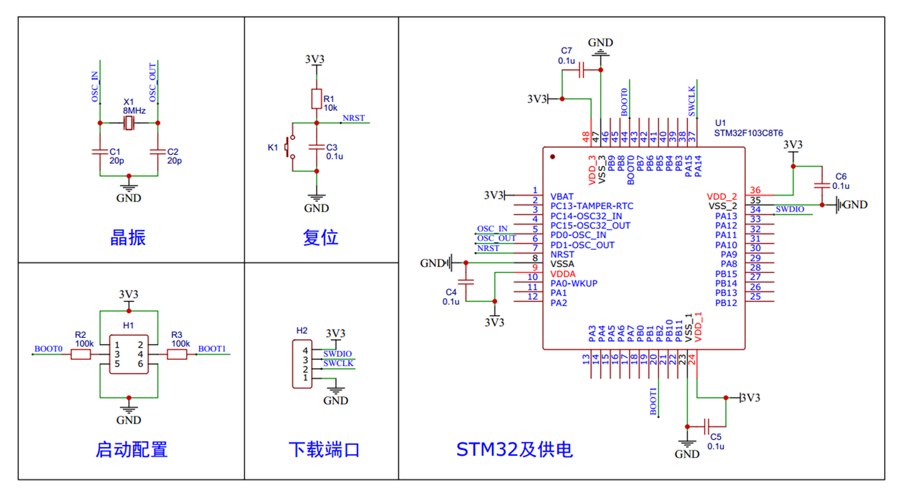

# 简介
- STM32 是 ST 公司基于 ARM Cortex-M 内核开发的 32 位微控制器
- STM32 常应用在嵌入式领域，如智能车、无人机、机器人、无线通信、物联网、工业控制、娱乐电子产品等
- STM32 功能强大、性能优异、片上资源丰富、功耗低，是一款经典的嵌入式微控制器

# ARM 简介
- ARM 既指 ARM 公司，也指 ARM 处理器内核
- ARM 公司是全球领先的半导体知识产权（IP）提供商，全世界超过 95% 的智能手机和平板电脑都采用 ARM 架构
- ARM 公司设计 ARM 内核，半导体厂商完善内核周边电路并生产芯片


# 芯片命名规则 / 系统结构


# STM32F103C8T6
- 系列：主流系列 STM32F1
- 内核：ARM Cortex-M3
- 主频：72MHz
- RAM：20K（SRAM）
- ROM：64K（Flash）
- 供电：2.0~3.6V（标准 3.3V）
- 封装：LQFP48

# 片上资源 / 外设
| 英文缩写 | 名称 | 英文缩写 | 名称 |
|---|---|---|---|
| NVIC | 嵌套向量中断控制器 | CAN | CAN 通信 |
| SysTick | 系统滴答定时器 | USB | USB 通信 |
| RCC | 复位和时钟控制 | RTC | 实时时钟 |
| GPIO | 通用 IO 口 | CRC | CRC 校验 |
| AFIO | 复用 IO 口 | PWR | 电源控制 |
| EXTI | 外部中断 | BKP | 备份寄存器 |
| TIM | 定时器 | IWDG | 独立看门狗 |
| ADC | 模数转换器 | WWDG | 窗口看门狗 |
| DMA | 直接内存访问 | ||
| USART | 同步 / 异步串口通信 | ||
| I2C | I2C 通信 | ||
| SPI | SPI 通信 |


# 最小系统电路
